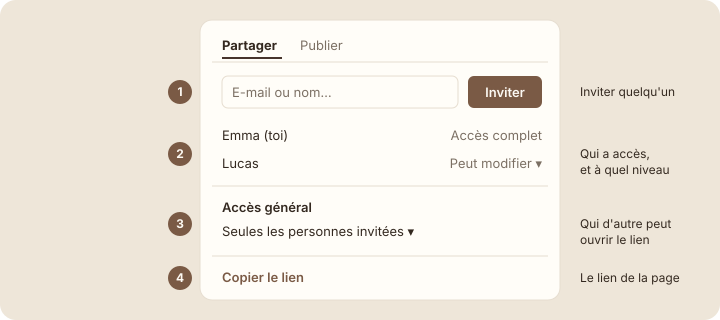

Le bouton Partager
Étape 1 : comprendre
Jusqu'ici, ton espace Studio Nova était dans « Pages privées » : toi seul le voyais. Pour travailler en équipe, il faut partager. Tout se passe dans un seul bouton : « Partager » (Share), en haut à droite de chaque page.
Le menu qui s'ouvre a deux onglets : « Partager » pour inviter des personnes, et « Publier » (Publish) pour mettre la page en ligne sur le web, visible par n'importe qui. Pour travailler en équipe, tu n'utiliseras que le premier.
Dans l'onglet « Partager », tu trouves quatre éléments :
- Le champ d'invitation : tape l'e-mail ou le nom d'un collègue, puis « Inviter ».
- La liste des personnes qui ont accès, chacune avec son niveau d'accès (leçon suivante).
- L'accès général (General access) : qui d'autre peut ouvrir la page. « Seules les personnes invitées » (Only people invited), « Tous les membres de l'espace de travail » (Everyone at workspace) ou « Toute personne disposant du lien » (Anyone on the web with link).
- « Copier le lien » (Copy link), pour envoyer l'adresse de la page.

« Partager » donne accès à des personnes précises ; « Publier » met la page en ligne pour tout le monde.
Astuce : copier le lien ne donne aucun accès par lui-même. Si la personne n'est pas invitée et que l'accès général est « Seules les personnes invitées », elle verra un message lui demandant de demander l'accès.
Emma partage Site Orion
Emma partage la page « Site Orion » avec Lucas. Clique sur les numéros pour découvrir chaque partie du menu.
Partager · Publier
Choisis un numéro. Il y a 5 points à découvrir dans ce menu.
Découvrir le menu Partager
- Ouvre la page « Projets » de Studio Nova. En haut à droite, clique sur « Partager ».
Capture d'écran Notion Menu Partager · images/captures/m07-menu-partager.png
- Lis la liste des personnes : pour l'instant, il n'y a que toi.
- Regarde le réglage d'accès général. Laisse-le sur « Seules les personnes invitées ».
- Clique sur l'onglet « Publier » pour le découvrir, sans cliquer sur le bouton de publication. Reviens sur « Partager ».
- Si un collègue utilise Notion avec toi et a accepté de t'aider, tape son e-mail, choisis « Peut consulter », puis « Inviter ». Sinon, passe cette étape.
- Clique sur « Copier le lien » et colle-le dans une note : c'est l'adresse de la page.
Attention : n'invite jamais une adresse e-mail au hasard pour tester. L'invitation envoie un vrai e-mail et donne un vrai accès à tes pages.
Exercice · dans Notion
Explorer le menu Partager
- Ouvre le menu Partager de « Projets ».
- Repère les quatre zones : invitation, liste des personnes, accès général, copier le lien.
- Copie le lien de la page.
Résultat attendu : tu sais où inviter quelqu'un et où vérifier qui a accès. L'accès général est resté sur « Seules les personnes invitées » et rien n'a été publié sur le web.
Étape 4 : vérifier
À retenir
Objectif de la leçon : tu sais maintenant te repérer dans le menu Partager et faire la différence entre partager et publier.
- Le bouton « Partager » est en haut à droite de chaque page.
- « Partager » donne accès à des personnes précises ; « Publier » met la page sur le web.
- Copier le lien ne donne aucun accès par lui-même.
Choisis une réponse avant de valider.
Le lien n'est qu'une adresse. Sans invitation, Sarah doit demander l'accès.
Choisis une réponse avant de valider.
Publier rend la page publique. Pour travailler en équipe, on utilise l'onglet « Partager ».